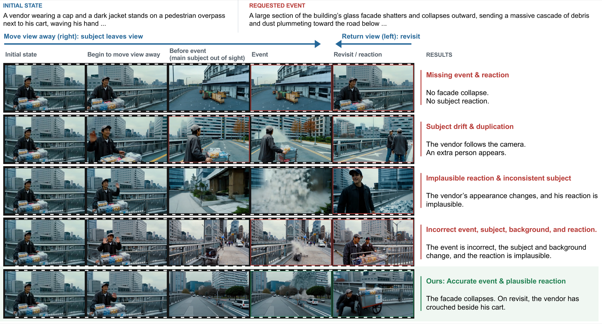
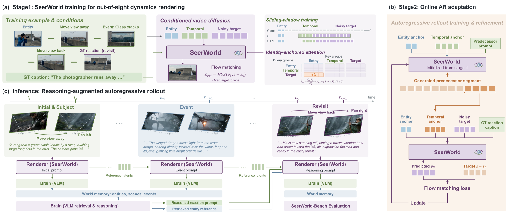

Look away
The camera leaves a visible subject and establishes an observation gap.
Out-of-sight world evolution
SeerWorld enables entities to remain active participants in a changing world, supports user-specified events, and renders causally plausible reactions throughout out-of-sight world evolution.
Brain-guided generation
Based on the user prompt, the visual renderer generates a segment, the VLM observes the realized world, updates memory, reasons about the event, and guides the next generation.
Case studyRuined cathedral · Colossal gargoyle lands
The challenge
When the observer looks away, new events should still alter the world. A successful model must execute the switched event, preserve the subject and scene, and render a causally plausible change when the camera returns.

The camera leaves a visible subject and establishes an observation gap.
A new event is introduced mid-rollout, without revealing the future response.
The revisited subject must remain recognizable and show a plausible consequence.
The framework
SeerWorld separates world-state reasoning from rendering. A VLM continuously records what the renderer actually generated, then reasons about an appropriate subject state after an event is observed.

The brain tracks persistent entities and world states, then reasons about event consequences before rendering each revisit.
Events emerge clearly and evolve while the focal subject remains outside the current view.
Revisited subjects preserve their identity while responding plausibly to the intervening event.
Data & benchmark
SeerWorld-Data provides segment-level supervision for event realization, long-range continuity, and behavioral change. SeerWorld-Bench tests the full event–revisit–reaction chain.
Inside SeerWorld-Data
Selected training videos from SeerWorld-Data's photorealistic and game domains illustrate its range of subjects, environments, camera trajectories, and event-driven changes. Click any example to inspect the full clip.
Benchmark results
SeerWorld improves out-of-sight reactive evolution while preserving visual quality and consistency.
Core task success requires Revisit, Event, and Causal scores to equal 1.
Scores in percent · higher is better
| Method | Core | Revisit | Event | Causal | React. | Visual | Subj. | Bg. | Motion |
|---|---|---|---|---|---|---|---|---|---|
| LingBot-World | 15.8 | 92.5 | 77.5 | 29.2 | 31.3 | 68.8 | 87.6 | 94.6 | 98.0 |
| LingBot-World-v2 | 20.0 | 76.7 | 68.3 | 27.1 | 25.4 | 76.7 | 82.6 | 92.5 | 98.4 |
| YUME-1.5 | 15.8 | 62.5 | 86.7 | 22.5 | 20.0 | 65.4 | 72.9 | 88.7 | — |
| SANA-WM | 13.3 | 88.3 | 67.5 | 26.7 | 24.2 | 53.8 | 67.7 | 90.8 | 98.7 |
| Echo-WM | 16.7 | 60.8 | 66.7 | 22.5 | 21.7 | 82.9 | 97.6 | 89.2 | 98.7 |
| Evoke | 20.0 | 95.8 | 80.0 | 32.9 | 36.3 | 78.3 | 93.5 | 95.4 | 99.0 |
| Evoke-Turbo | 21.7 | 98.3 | 89.2 | 32.5 | 29.6 | 65.4 | 97.0 | 96.2 | 99.1 |
| SeerWorld ours | 90.8 | 100.0 | 97.5 | 94.2 | 85.0 | 83.8 | 99.2 | 98.3 | 99.5 |
SeerWorld world evolution demos
Citation
The BibTeX entry will be added when the paper is publicly available.
@inproceedings{seerworld2027,
title = {SeerWorld: Towards Out-of-Sight World
Evolution in Generative Video Models},
year = {2027},
note = {Citation details forthcoming}
}